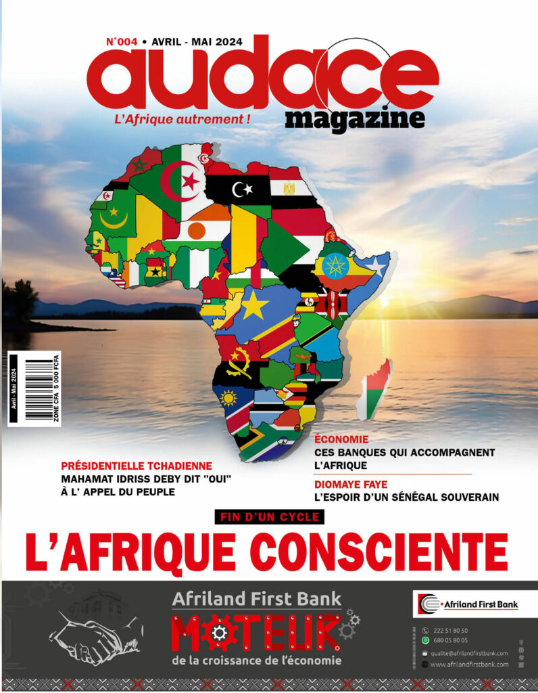
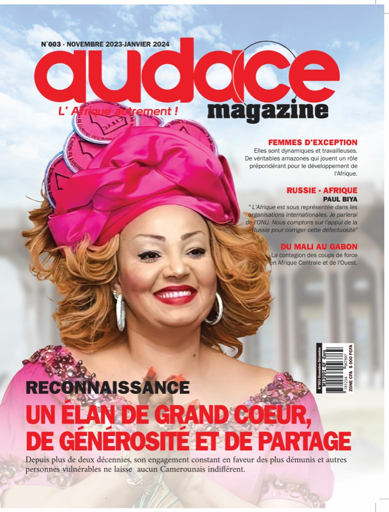
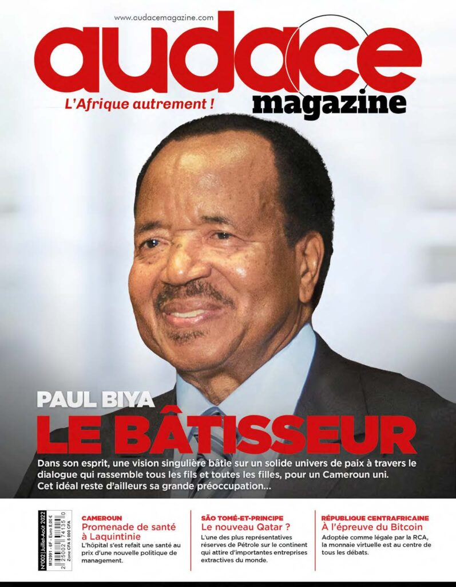

Dernier numéro
N°005 · Septembre–novembre 2025
Présidentielle Cameroun 2025 : le chrono est lancé
La présidentielle camerounaise et les grands enjeux politiques, économiques et diplomatiques du continent.
- DossierLes forces en présence, ce que dit la loi, les chiffres clés
- DossierUn nouveau paradigme politique est-il possible ?
- ÉconomieÉlectricité : Eneo passe sous pavillon national
- ÉconomieTourisme : un secteur clé, 4 % du PIB seulement
- ActualitéCameroun, terre d’innovations technologiques
- FocusMusique camerounaise : une nouvelle génération dorée
En lecture libre, sans compte, sur téléphone comme sur ordinateur.
Les numéros précédents

Comment la France perd l’Afrique
Lire
Femmes leaders africaines
LireHors-série · Mai 2023Spécial gouvernement du Cameroun
Lire
Paul Biya, le bâtisseur
Lire